WW2의 수정 이야기 (2) - 잠수함을 찾는 수정구슬...아니 수정판
게시: 2024-10-03T06:30:28+09:00
<1914년 9월 22일의 충격> 1880년, 피에르 퀴리(Pierre Curie)와 그 동생 자끄 퀴리(Jacques Curie)는 압전(壓電) 효과, 즉 piezoelectric effect을 실험으로 입증. 압전효과라는 것은 토파스나 수정, 소금 등의 결정체(crystal)의 전하량이 기계적 응력(stress)에 따라 변화하고, 또 그 역으로도 변화하는 현상. 그러니까 수정 결정체에 압력을 가하면, 그 수정에 연결된 전기선을 통해 신호가 발생하고, 반대로 전기 신호를 주면 수정 결정체의 모양이 변화하며 기계적 압력이 발생하는 것.
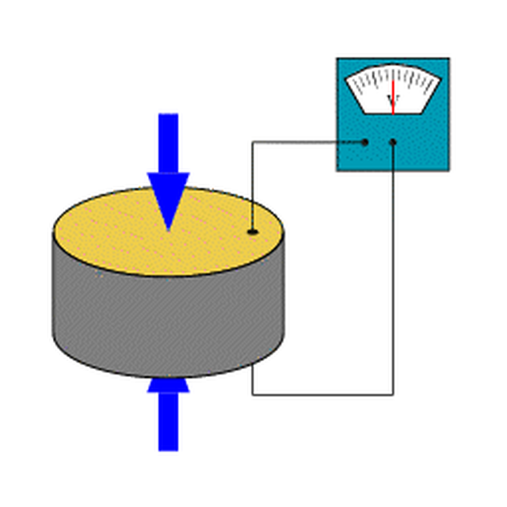
(압전 성질을 가진 결정체 디스크의 모양이 변화하면서 전압을 만들어내는 모습을 (과장하여) 보여주는 그림)
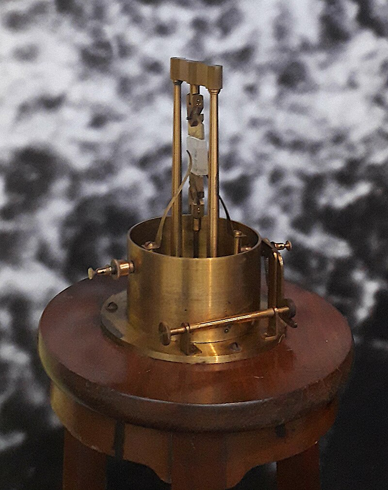
(퀴리 형제가 압전효과를 실험할 때 쓴 것과 비슷한 장치. 저 장치를 Curie compensator (퀴리 보정기)라고 부르는 모양.) 이렇게 엄청난 발견이 이루어졌는데도 당시 유럽이 소위 벨에포크(Belle Époque)라고 불리는 평화로운 시대여서 그랬는지 수십 년간 이걸 이용해서 뭔가를 만들어 보자는 생각들을 하지 않음. 그렇게 나태한 풍조는 전쟁이 한번 꽝 터지면 순식간에 고쳐짐. 말이 씨 된다고 정말 1914년 제1차 세계대전이 터짐. 제1차 세계대전은 다들 아시다시피 탱크, 독가스와 항공기 등 온갖 신병기가 다 동원된 전쟁으로서, 각국 과학자들은 사람 죽이는데 자신들의 기술을 어떻게 적용할 수 있는지 골머리를 앓음.
(1900년 파리 세계박람회 당시 Le Château d'eau (물의 궁전). 소위 말하는 아름다운 시대(Belle Époque).)
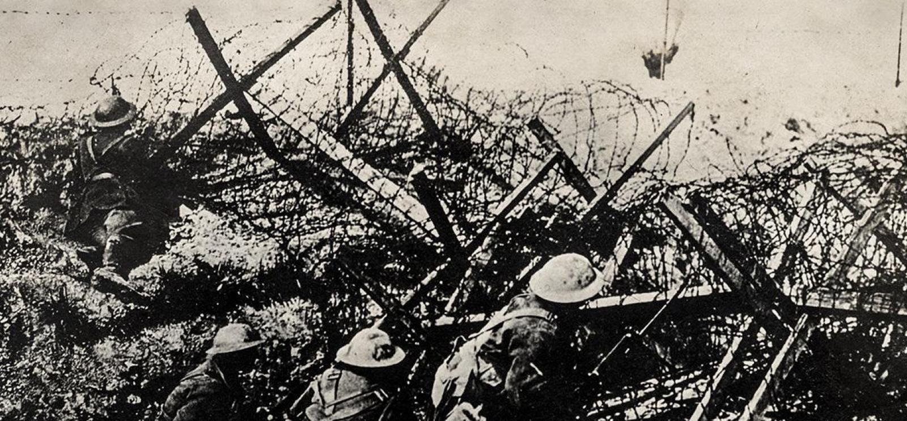
(그런 벨에포크를 순식간에 박살된 WW1. 온갖 신병기가 다 동원되었으나 사실 전쟁 양상을 가장 크게 바꾼 것은 이미 모두가 그 존재를 알고 있던 평범한 무기, 즉 기관총과 철조망이었음. 평소 으시대는 장군들도 실은 다 아마추어라서, 이미 나온지 수십년 지난 단순한 무기들인 기관총과 철조망이 전쟁의 양상을 어떻게 바꿔놓을지 전혀 예상하지 못했음.) 그 중에서 해군에게는 잠수함이라는 충격이 컸음. 군사적으로도 실전 배치될 정도의 잠수함이 나온 것은 무려 1888년으로서, 보통 생각하는 것처럼 영국이나 독일이 아니라 스페인 해군의 Peral 호가 최초의 성공적인 군사적 잠수함. 1890년에는 물 속에 잠항한 상태로 어뢰를 발사하는 데도 성공. 다만 이 잠수함은 디젤 엔진 없이 순수 전기 배터리로 운항하는 잠수함이라서 항속거리가 너무 짧았고, 특히 보수적이고 고루하기 짝이 없는 스페인 해군의 노친네들은 도둑놈처럼 물 속에서 몰래 어뢰를 쏘고 도망친다는 개념 자체를 극혐하여 1890년 퇴역시켜 버림. 그러나 영국이나 독일 등 선진국에서는 잠수함의 군사적 효용가치를 높이 평가하여 상당수의 잠수함을 건조하고 실전 배치. 다만 여전히 해군의 주력은 두꺼운 장갑을 두르고 엄청난 거포를 장착한 거대 전함들. 잠수함은 그저 잠재적 가치를 가진 장난감 정도로 취급되었음.
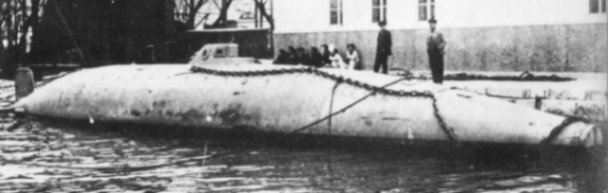 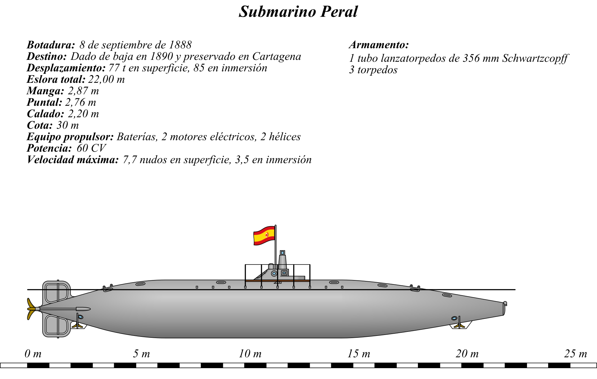
(세계 최초로 정식 취역한 군용 잠수함 Peral. 650톤, 수중에서 3노트. 항속거리는 750km.) 그런 오만함은 WW1이 시작되자마자 하루 아침에 날아감. 전쟁 첫해인 1914년 9월 22일, 영국 인근인 북해 남쪽을 봉쇄 중이던 3척의 Cressy급 장갑 순양함 (1만2천톤, 21노트) HMS Aboukir, HMS Hogue, 그리고 nameship인 HMS Cressy까지 모두가 단 한 척의 독일 U-boat SM U-9에 의해 1시간 만에 차례로 격침된 것. 배수량으로 총 3만6천톤이 넘는 장갑 순양함 3척이 고작 600톤의 배수량에 딱 29명이 탄 잠수함 1척에 깔끔히 격침되고 무려 1,459명의 영국 수병들과 장교들이 전사한 사건은 영국 뿐만 아니라 전세계 해군에게 엄청난 충격을 주었음.
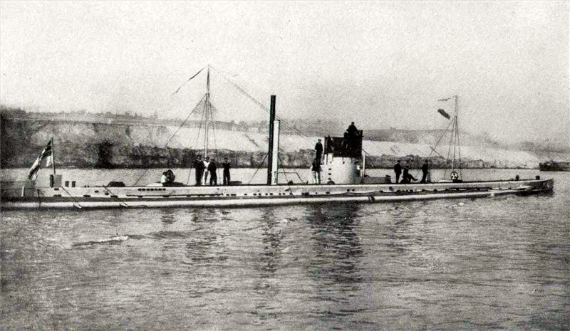
(WW1 당시 독일의 U-boat인 U-9. 1910년 진수. 600톤, 잠수시 8노트. 어뢰 딱 6발 휴대.)
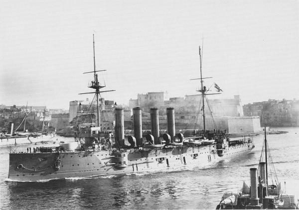
(격침된 3척의 크레시급 장갑 순양함 중 한 척인 HMS Aboukir.)
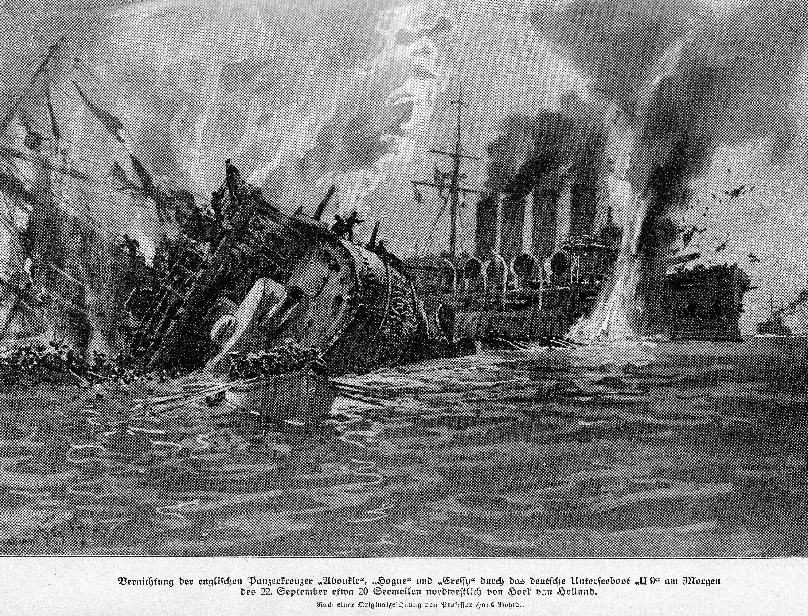
(1914년 9월 22일, SM U-9이 3척의 장갑 순양함을 격침시키는 모습)
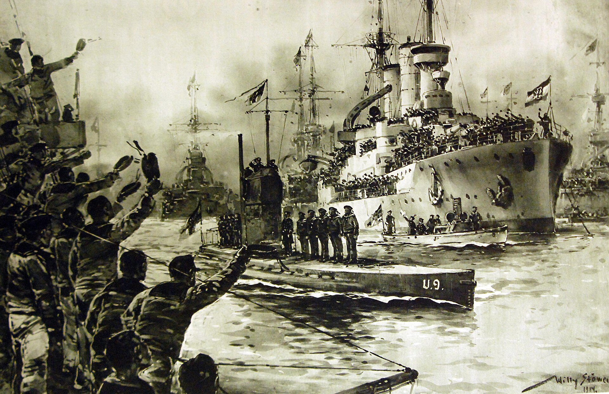
(해군사에 길이 남을 혁혁한 전과를 올리고 빌헬름스하벤(Wilhelmshaven) 군항에 당당히 귀항하는 SM U-9을 환영하는 독일 해군) <전쟁 중이니 사람 죽이는 연구를 해야지> 이제 누구도 장난감이라고 부르지 못하게 된 잠수함에 대해 연합군 해군은 어떻게 대응해야 할지 몰랐음. 당시엔 소나(sonar)는 커녕 수중 청음기조차 없었기 때문. 그런 기본적인 센서 기술이 없었으므로 잠수함도 평상시엔 물 위에 부상하여 적함을 눈으로 찾다가 적함이 보이면 비로소 잠항한 후 오로지 잠망경에 의존하여 적함을 조준하는 상황이었음. 그러니 당시 잠수함에 대한 유일한 대응은 잠수함이 잠항하기 전에 재빨리 격침시키거나, 잠수함이 잠항한 장소로 달려가 오로지 행운을 바라고 눈 먼 폭뢰를 마구 뿌려대는 것이 전부. 그런 상황에서 해결책을 내놓은 것은 프랑스의 물리학자 Paul Langevin. 랑쥬벵은 분자 레벨에서의 역학을 설명하는 랑쥬벵 역학과 랑쥬벵 방정식으로 유명한 물리학자인데, 그 역시 전쟁에 임하여 어쩔 수 없이 사람 죽이는 연구를 하게 됨. 실은 프랑스 대통령 명에 의해 랑쥬벵은 잠수함 탐지 연구에 투입된 것. 물 속의 잠수함을 어떻게 탐지하지? 공기 속에서처럼 물 속에서도 소리는 파동으로 존재하므로, 그 기계적인 파동을 전기 신호로 바꾸면 물 위의 배에서도 들을 수 있을 텐데, 당시로서는 그걸 해낼 방법이 마땅치 않았음.
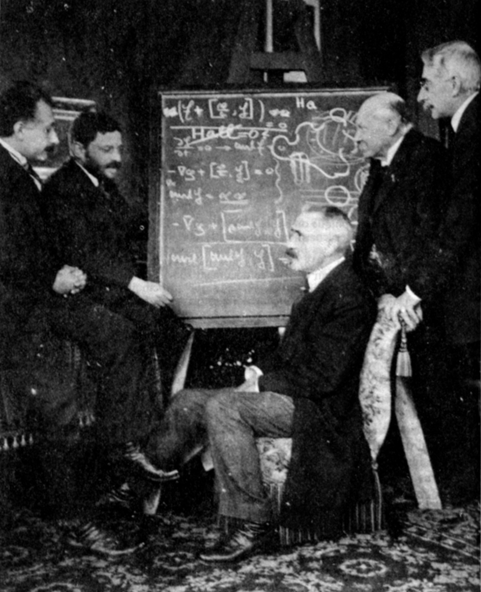
(당대 유명 물리학자들. 왼쪽부터 알버트 아인슈타인, 파울 에렌페스트(Paul Ehrenfest), 폴 랑쥬벵, 하이커 캄멀링 온스(Heike Kamerlingh Onnes), 피에르 바이스(Pierre Weiss))
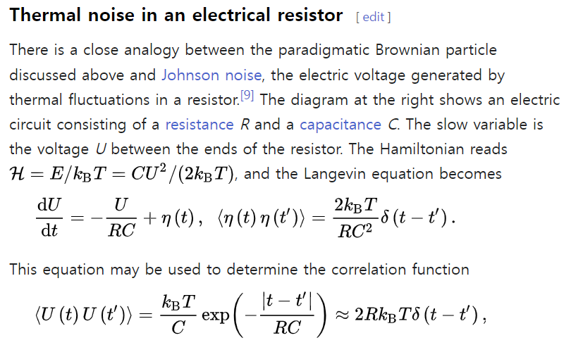
(뭔지 전혀 모르겠으나 아무튼 이렇게 어려운 방정식을 만든 것을 보면 훌륭한 분) 그런데 랑쥬뱅이 박사 학위를 받을 때 도움을 받은 스승(?) 중 하나가 바로 피에르 퀴리. 심지어 피에르 퀴리가 죽은 이후, 그는 사모이자 역시 유명한 과학자였던 마리 퀴리와 염문을 일으킬 정도로 퀴리 부부와는 가깝게 지냈음. 당연히 랑쥬벵은 피에르 퀴리가 연구해놓은 압전효과에 대해 잘 알고 있었고, 그는 이걸 이용하여 물 속의 잠수함을 탐지할 방법을 연구. 곧 랑쥬벵은 얇은 수정 결정판 양쪽에 금속판을 붙인 형태의 수중 청음기를 개발. 이 청음기는 곧 바로 위력을 발휘. 1916년 4월 23일, 대잠 작전에 동원된 트롤 어선 치리오(Cheerio) 호는 이 수중 청음기를 이용하여 독일해군의 기뢰부설 잠수함인 UC-3를 탐지하고 강철 그물로 이 잠수함을 끌어낸 뒤 폭뢰로 격침시킴.
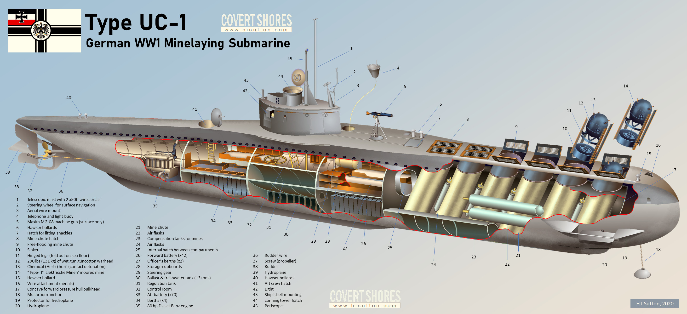
(격침된 UC-3와 동일한 기뢰부설 잠수함 UC-1의 구조. 180톤, 수중에서 5노트. 어뢰 발사관은 전혀 없이 순수하게 기뢰부설만을 위해 건조된 U-boat. 흔히 기뢰는 방어용으로만 쓰인다고 생각하지만 잠수함이나 항공기를 이용하여 적 항구와 그 주변에 기뢰를 부설하는 것은 매우 효과적인 공격 전술. 실제로 그 기뢰에 부딪혀 적함이 격침되지 않는다고 하더라도, 적의 기뢰가 인근에 부설되었다는 사실 자체만으로도 그 항구의 활동량을 크게 위축시킬 수 있음. 전쟁은 보급에서 승패가 결정되는데, 그런 선적 물동량을 위축 시키는 것은 실제 군함을 격침시키는 것보다 더 효과적인 공격.)
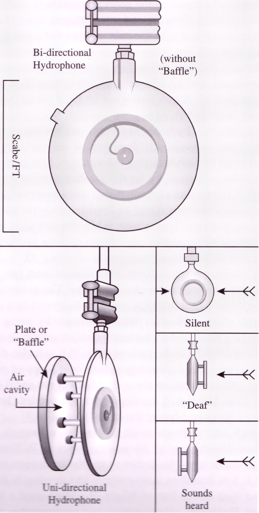
(영국에서도 거의 비슷한 시기에 거의 동일한 방식의 수중 청음기를 독자적으로 개발. 저 사진 속 두번째 인물이 영국에서 청음기를 개발한 Boyle. 그리고 저 수정판을 이용한 청음기도 보일의 설계. 그러나 미국에 특허를 출원한 것은 랑쥬벵이 주도한 프랑스팀이 먼저였으므로 세계 최초의 잠수함 탐지 청음기 개발의 공로는 랑쥬벵에게 주어짐. 더 나아가, 랑쥬벵은 동일한 청음기를 역으로 이용해 거기서 강한 전기 신호를 주어 ping 음향을 물 속에 발사하고, 그 반사파를 탐지하여 적 잠수함과의 거리를 측정하는 근대적 sonar의 원리까지 제창. 그러나 거기까지 개발된 것은 WW1이 다 지난 뒤의 이야기.)
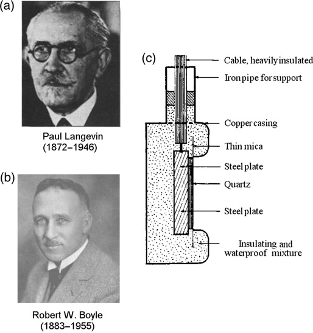
(이건 영국에서 개발한 지향성 수중 청음기. 사실 수중 청음기 자체만으로는 적 잠수함이 어느 방향에 있는지를 알기 어려운데, 이 청음기는 한쪽에 방음판을 설치하여 한쪽면에서는 아예 소리가 들리지 않도록 하여 적 잠수함의 대략적인 방향을 파악하도록 고안됨.) 이렇게 WW1을 통해 얇은 수정 결정판의 압전효과를 이용한 전기 장치들이 개발되기 시작. 그러나 그런 수정 결정판이 WW2 때 태평양 전선의 할시 제독의 불만을 달래주려면 아직 남은 길이 한참 많이 남아 있었음.